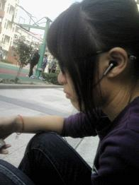
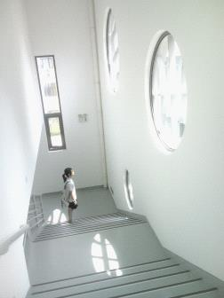
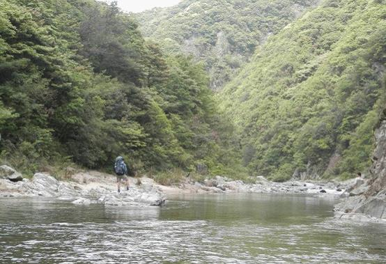
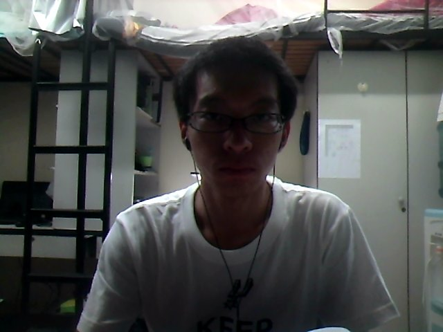

发信人: magicyangzp (magicyang), 信区: outdoor
标 题: 【野协团爆】【第三弹】技术部之定向队
发信站: 饮水思源 (2013年06月07日00:22:21 星期五)
大家期待已久的技术部团曝之定向队来了！
先介绍一下队员们吧！
队长:杨志鹏
副队长：罗人和
队员：钱小宇、许恩馨、李樵（由于部门交叉，樵爷就到攀岩队自曝咯~）
下面就是成员的自曝了！
钱小宇，12级医学院，桑海小宁
我的名字很好记~记不住就叫小宇好了~(*^__^*) ~虽然在闵行只待一年，但是还是认识了
很多人，在协会学会了很多东西。
小个子妹子就是我囧……没事可以卖个萌
screen.width - 200){this.width = screen.width - 200}">
可以装个X= =
 screen.width - 200){this.width = screen.width - 200}">
还可以跟脑残一起犯个二。咳……这个暂时缺集体犯二图
其实我是伪文艺，苍老师是小清新~（这是我死党给我拍的一张比较喜欢的图）
 screen.width - 200){this.width = screen.width - 200}">
表示很久不自拍什么的……捉急
去过地大冬训和三尖……其实一直想走水线来着，可是总是失败= =
爱户外，爱住帐篷，也爱山间云雾缭绕，被自然环抱之感
待我去了卢湾，当了副舵主，你们可以来找我玩的喵~
我是定向队队员许恩馨，医学生一枚~喜欢剑道，喜欢制作手绘书签（管他好看不好看~==
）一直以为自己是活泼与宁静共存的矛盾体╮(╯▽╰)╭首次定向的时候手里拿着一张地
图和一个指北针，对着分不清东西南北的场地心里是一片茫然==；不过一个又一个找到目
标点的成就感和为下一个目标全力以赴的喜悦感嘛，才是定向所具有的独特的魅力，定向
也是，生活也是。
screen.width - 200){this.width = screen.width - 200}">
screen.width - 200){this.width = screen.width - 200}">
我是定向队副队长兼登山队队员罗人和
 screen.width - 200){this.width = screen.width - 200}">
不喜欢被照相，所以连张像样的照片都没有-_-!
因特殊原因不幸留级……
性格多变：愤怒吓死人，安静吓死鬼
户外之于我的意义：用另一种眼光，用另一种方式看看这个世界，看看自己。
大家好，我是定向队队长杨志鹏，12级物理系（同副队一样因特殊原因留级...）
我觉得定向就像人生一样，有时候拿着地图，也会感到迷茫，不知所往，就像生活中虽然
心中总有既定的目标，但有时也会因为种种原因而暂时失去方向，此时最重要的就是先确
定自己所处的位置，再去寻找通往目标的径路。
有时候结果并不重要，重要的是在找寻的过程中得到的东西。
照片什么的，即拍即用，求轻喷...
 screen.width - 200){this.width = screen.width - 200}">
嗯~团曝大概就是这样了~下学期定向队加油！
--
※ 来源:·饮水思源 bbs.sjtu.edu.cn·[FROM: 183.192.199.171]
|